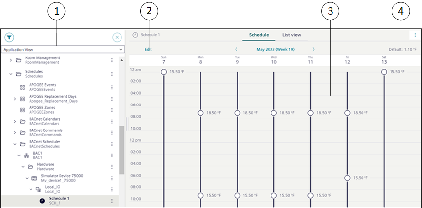
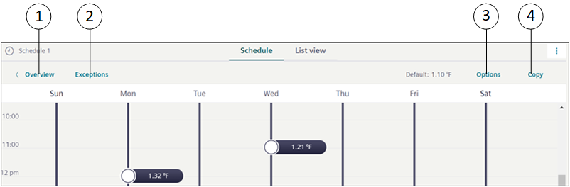
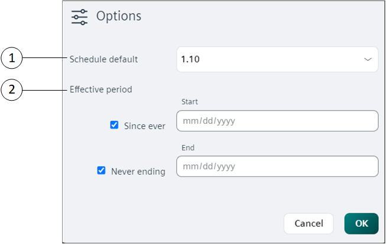
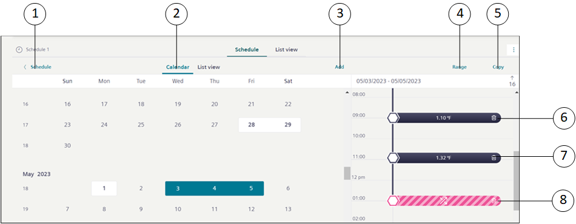
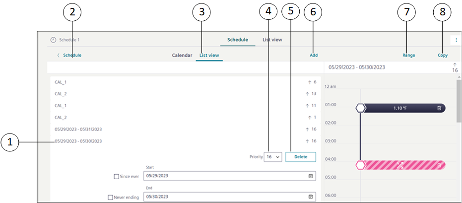
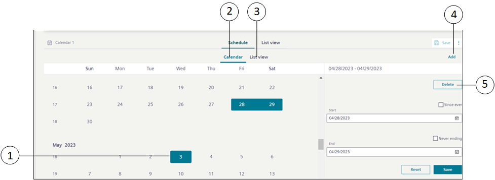

BACnet Schedules
BACnet Schedules
You use BACnet scheduling to automatically command points at prescribed time intervals. You can create daily or weekly schedules for BACnet field panels. Each BACnet panel stores its own calendar and schedule objects, and a BACnet panel can store and run multiple calendars or schedules at the same time. Because BACnet schedules reside in and are executed by field panels, they run even if the management station they are associated with is not running. BACnet schedules handle only BACnet objects.

1 | System Browser | Displays the list of objects in the selected view. |
2 | Edit | Navigates to the Edit mode that allows you to edit schedule entries and add exceptions. |
3 | Schedule Overview | Displays information of the schedule entry and exception entry of the selected schedule. It also displays either a value or Scheduling disabled text for each schedule entry. |
4 | Default | Displays the default value of the schedule entry. |

1 | Overview | Navigates to the schedule workspace. On clicking Overview, you can navigate back to the Overview page where you can only view the schedule or exception entries but cannot edit them. |
2 | Exceptions | Displays the Calendar view and List view from where you can add exceptions to the schedule. |
3 | Options | Displays the Options dialog box that provides options to relinquish the default value. You can also configure the effective period for the schedule. |
4 | Copy | Enables copying of schedule entries to other days of the week. |

1 | Schedule default | Allows you to enter or select a default value for the schedule entry. You can also select the Scheduling disabled option, which disables the schedule entry. |
2 | Effective period | Allows you to specify the start and end time for a schedule. |
BACnet Exceptions
You can define exceptions from the Calendar or List view.

|
BACnet Exceptions – Calendar view | ||
1 | Schedule | Navigates to the schedule entries workspace. |
2 | Calendar | Displays the schedule exception entries in the Calendar view. |
3 | Add | Displays the <new exception> dialog box to add new exceptions. |
4 | Range | Allows you to convert an exception entry of type Date to Date range. |
5 | Copy | Enables copying of schedule exception entries to other days of the week. |
6 | Exception Entry | Displays the details of the schedule exception entry. |
7 | Delete Exception Entry | Allows you to delete a schedule exception entry. |
8 | End of exception | Displays the end of exception. If the End of exception option is selected for a schedule exception entry, then the schedule falls back to the weekly schedule defined for that period. |
List view

|
BACnet Exceptions – List view | ||
1 | Exception Entry | Displays the details of the schedule exception entry. |
2 | Schedule | Navigates to the schedule entries workspace. |
3 | List view | Displays the schedule exception entries in the List view. |
4 | Priority | Allows you to change the priority of the exception entry. By default, the priority is set to 16. |
5 | Delete | Allows you to delete a schedule exception entry. |
6 | Add | Displays the Create exception dialog box to add new exceptions. |
7 | Range | Allows you to convert an exception entry of type Date to Date range. |
8 | Copy | Enables copying of schedule exception entries to other days of the week. |
Calendar Exception
If the BACnet calendar is added as an exception, the entries of the calendar are considered to be exception entries for the scheduler.
|
1 | Open calendar | Navigates you to the Secondary pane and displays details of the calendar. |
2 | Profile | Navigates you to the Profile view. |
3 | Calendar | Displays the details of the calendar entry. |
BACnet Calendars
BACnet calendars allow you to override a scheduled event. In this sense, you can consider them as exception schedules, consisting of dates only. When you create a calendar, you can choose specific dates (May 15), a date range (December 21 – 31), or a week and a day you want the exception to run (third week of the month, on Thursday). All calendars are associated with a schedule. If you want to reduce energy costs in your building during company holidays, for example, you can create a holiday calendar. On these days, your calendar can command the system to reduce the output of heating or cooling systems when the building is unoccupied.

1 | Calendar Entry | Displays the calendar entry. |
2 | Calendar | Displays the configured calendar entries in the Calendar view. |
3 | List view | Displays the configured calendar entries in the List view. |
4 | Add | Displays the <new calendar entry> dialog box that allows you to add new calendar entries. |
5 | Delete | Deletes a calendar entry. |
Validation in BACnet Schedules and Calendars
When you set BACnet Schedules and Calendars target object with Validation profile = Enabled, Monitored or Supervised combined with the Four Eyes check box option then you are prompted to validate the actions performed to the target object.
Some examples of the performed actions are: Add, Modify, Delete, Save, Copy Paste.
When the object is modified or updated, all the changes are logged into the Audit Trail log of the validated object and the object version increments are recorded and stored under the right panel, in the History tab.
NOTE: Users with OIDC or software accounts are not allowed to validate BACnet Schedules and Calendar objects.
The following table displays applicable BACnet Schedules and Calendars target objects with their respective actions:
Validation Profile Target Objects | Action | Validation Output |
BACnet Schedule |
| On saving the changes, Validation required dialog box with corresponding input field is displayed based on the Validation profile. |
BACnet Calendar |
| |
Data points added in BACnet Schedules |
| |
BACnet Schedule Exceptions |
|
Following table displays some more scenarios where multiple objects are validated and their corresponding validation output:
# | Scenarios for BACnet Schedules | Validation Output | |
1 | BACnet Schedule is not validated | Data point is not Validated | Validation required dialog box is not displayed. |
Data point is Validated | On modification of BACnet schedule for Weekly Entries, Exception Entries or parameters under the Options dialog box, Validation required dialog box with the highest Validation profile is displayed. | ||
2 | BACnet Schedule is validated | Data point is not validated | On modification of BACnet schedule for Weekly Entries, Exception Entries or parameters under the Options dialog box, Validation required dialog box with the highest Validation profile is displayed. |
Data point is validated | On modification of BACnet schedule for Weekly Entries, Exception Entries or parameters under the Options dialog box, Validation required dialog box with the highest Validation profile is displayed. | ||
# | Scenarios for BACnet Calendar | Validation Output |
1 | BACnet Calendar is not validated | Validation required dialog box is not displayed. |
2 | BACnet Calendar is Validated | On Modification of BACnet Calendar Exception Entries, Validation required dialog box with the highest Validation profile is displayed. |
NOTE: Similar validation configuration is also applied to subsystems like APOGEE P2, SICLIMAT, and so on.